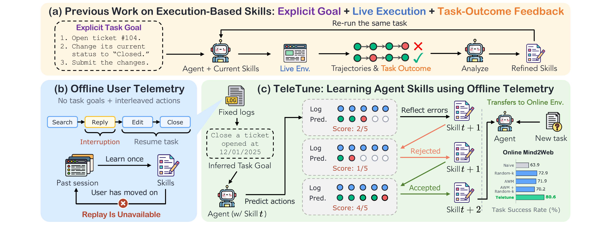
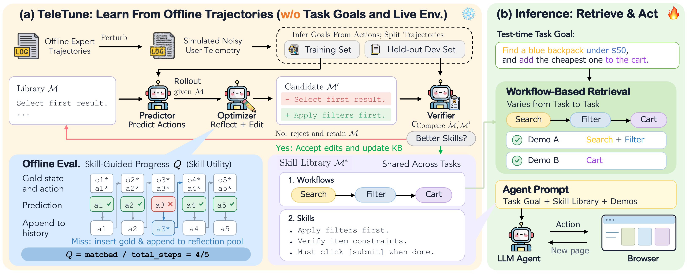

Many real-world software systems offer no live environment for agent skill learning. We therefore propose an offline metric, which we call skill-guided progress, to test whether updating skills on offline logs can stand in for the live success rate. We observe that optimizing for skill-guided progress incease the live success rate from 74.1% to 83.1%, 88.7%, and 92.3%, without using the downstream task success rate and live environment during optimization process.
Abstract
Computer-use agents need to capture procedural knowledge of how people use software. User telemetry, i.e., logs of interface states and user actions, offers a scalable source of this knowledge. However, learning reusable skills from these logs requires addressing three challenges. (1) Goal Underspecification, since logs do not record the goal behind each action; (2) Non-Replayability, since past activity cannot be replayed to evaluate skill updates; and (3) Interleaved Trajectories, since logs may mix several tasks without marking their boundaries.
To address these challenges, we introduce TeleTune, a framework for learning a textual skill library from offline logs that carry no recorded goals, cannot be replayed during optimization, and may interleave tasks. The library contains workflows describing cross-instance procedures and skills guiding individual task decisions, both provided as context to the agent at test time. TeleTune uses action-prediction errors on logged trajectories to propose library edits and keeps only those that improve held-out action-prediction accuracy, which we call skill-guided progress. The learned workflows also enable retrieval of demonstrations that cover the subgoals of a new task. At test time, the agent is provided with the learned library and the workflow-based retrieved demonstrations.
Experiments on WorkArena and Online-Mind2Web show that TeleTune outperforms random retrieval, Agent Workflow Memory (AWM), and their combination. We find that the best baseline varies by setting, whereas TeleTune achieves average success rates of 77.1% and 80.6%, respectively, improving over the strongest baseline on each benchmark by 6.7% and 7.7%. Under the heaviest perturbation of the WorkArena training data, TeleTune keeps the highest average success rate at 68.5%, 6.3% above the strongest baseline. Finally, our analyses show that skill optimization and workflow-based retrieval are complementary, that optimizing on fixed logs costs 5 to 75 times fewer tokens than validating the same edits with live episodes, and that skill-guided progress tracks the live success rate.
Why Is Telemetry Hard to Learn From?
Completing a task in an unfamiliar software system requires knowing more than which buttons to click. An agent handling a service request may need to locate the relevant record, check its fields, and follow a local procedure before changing its status. Telemetry captures how users carry out such recurring procedures. Unlike the goal-labeled trajectories used in the skill-learning literature, it records ongoing user activity whose goals and task boundaries are implicit.

Learning transferable agent skills from offline user telemetry. (a) Execution-based skill refinement uses explicit task goals and outcome feedback with a live environment. (b) User telemetry does not record the goal behind each action, and revising a skill cannot produce new outcomes for the logged activity. The logs may also interleave tasks. (c) TeleTune infers a goal for each logged trajectory, uses prediction errors on the fixed logs to propose skill edits, and keeps edits that improve skill-guided progress.
Goal Underspecification
Logs record what a user did, but typically do not record the goal behind each action sequence.
Non-Replayability
We cannot ask users to repeat their tasks each time we update a skill library, and logs do not preserve a resettable environment. We must evaluate updates offline.
Interleaved Trajectories
A user might interrupt a record update to look something up elsewhere, handle an unrelated request, and then return to the original record.
How TeleTune Works
Our central idea is to use the prediction of recorded actions as the learning signal for building and revising the skill library. The library is one text document with two kinds of entries. A workflow gives the ordered steps of a procedure that recurs across tasks, with instance-specific values written as placeholders. A skill resolves a single decision that a procedure leaves open, such as which field to fill first. We keep the agent's weights frozen and learn only the library.

Overview of TeleTune. (a) The predictor runs through each train-split trajectory with the current skill library in its prompt. The optimizer reflects on the first prediction error in each trajectory and proposes edits, and we keep the candidate library only if it has higher skill-guided progress on the dev split. (b) At inference, workflow-based retrieval selects complementary demonstrations for the new task.
Skill-Guided Progress: Scoring a Library on Fixed Logs
We run the predictor step by step through each logged trajectory, conditioned on an inferred goal, the current library, and the action history. After each prediction, we append the recorded action to the history (teacher forcing). An early error therefore does not derail later steps, and every scoreable step still gives feedback. We call the resulting action-prediction accuracy skill-guided progress, Q.
Skill-guided progress for this trajectory is 4/5. The error at step 3 becomes a failure case for the optimizer.
An Offline Reflect, Edit, Validate Loop
The library starts with workflows induced from the training trajectories and no skills. Optimization then runs in two stages. The workflow stage edits only workflows, and the skill stage then edits only skills while the workflows stay fixed. At each step, we reflect on prediction errors, edit the library, and validate the candidate on the dev split.
TeleTune Outperforms All Baselines Across Benchmarks
With GPT-5.4 as the agent, TeleTune achieves the best success rate across every level of WorkArena and Online-Mind2Web. Importantly, the largest gains are on WorkArena L1 (80.3% → 92.3%) and on the hardest Online-Mind2Web tasks (64.7% → 75.3%). The strongest baseline changes by setting. AWM + Random-k is the strongest on WorkArena, yet on Online-Mind2Web it falls below both AWM and Random-k.
Show full table
| WorkArena | Online-Mind2Web | ||||||
|---|---|---|---|---|---|---|---|
| Method | L1 | L2 | Avg. | Easy | Medium | Hard | Avg. |
TeleTune Keeps the Highest Success on Interleaved Data
To test learning from interleaved tasks under controlled conditions, we perturb the WorkArena training pool with an interruption rate q. We split each training trajectory into chunks of 2 to 5 actions and, before each chunk, insert with probability q the next chunk of a secondary task. A perturbed trajectory thus switches back and forth between coherent tasks, as an interrupted user would. We then rebuild every method from the perturbed pool.
TeleTune has the highest success on both levels at every q except L1 at q = 1.0, where it is 1.1% below Random-k. AWM's L1 success falls by 26.4% to 49.3%, only 3.7% above the naive agent, which uses no training trajectories at all.
Offline Optimization Saves Tokens
We learn one library per setting and reuse it unchanged across every test task and seed. Almost all optimization tokens go to the predictor scoring candidate libraries on the dev split, and the optimizer accounts for under 0.5%. On L1, running each of the 32 candidates on the 138 dev tasks would take 4,416 live episodes, or about 2.8B input tokens, 16 times our total. Live validation would also need a resettable environment for every dev task, which logs do not provide.
TeleTune does use more input tokens at test time, because the library is included in the prompt at every step. On L1, it uses 636.9K input tokens per episode against 343.4K to 386.1K for the baselines, while its episode length stays within the baseline range. Giving Random-k more context does not close the gap. With k = 30, it uses 504.2K input tokens per L1 episode and reaches only 63.7%.
What Does a Learned Library Look Like?
Each skill is a short rule the optimizer wrote from an observed prediction error. Workflows use placeholders for the values that vary across instances. Browse the full library each backbone learned on each training set, and search across skills and workflows.
Citation
@article{chen2026teletune,
title={TeleTune: Evolving Agent Skills From Offline Telemetry},
author={Chen, Justin Chih-Yao and Stengel-Eskin, Elias and Chen, Yan and Llado, Pol and Counts, Scott and Bansal, Mohit and Durme, Benjamin Van and Jhamtani Harsh and Verma, Gaurav},
journal={arXiv preprint arXiv:xxxx.xxxxx},
year={2026}}